Owner marks attendance + Present by default
The flow from start to finish, using real screenshots of the updated app with sample data. Amit, Pooja, Mohan and Kishan are marked by the owner. Ramesh and Suresh still check in on their phones.
A. One-time setup Owner
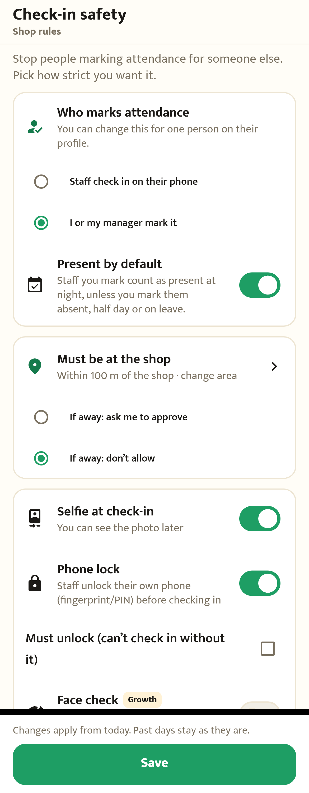
1More → Check-in safety
"Who marks attendance": pick I or my manager mark it. Turn on Present by default if most staff come every day.
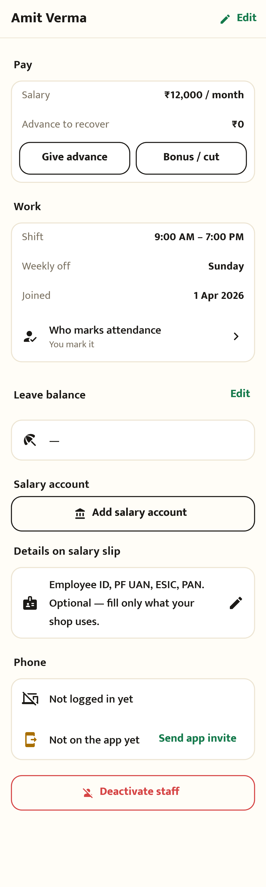
2Optional: one person different
Staff profile → Work → "Who marks attendance". Only the owner can change it.
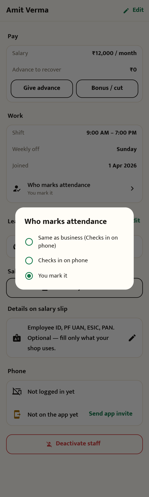
3Pick for this person
Same as business · Checks in on phone · You mark it.
B. During the day Staff Owner
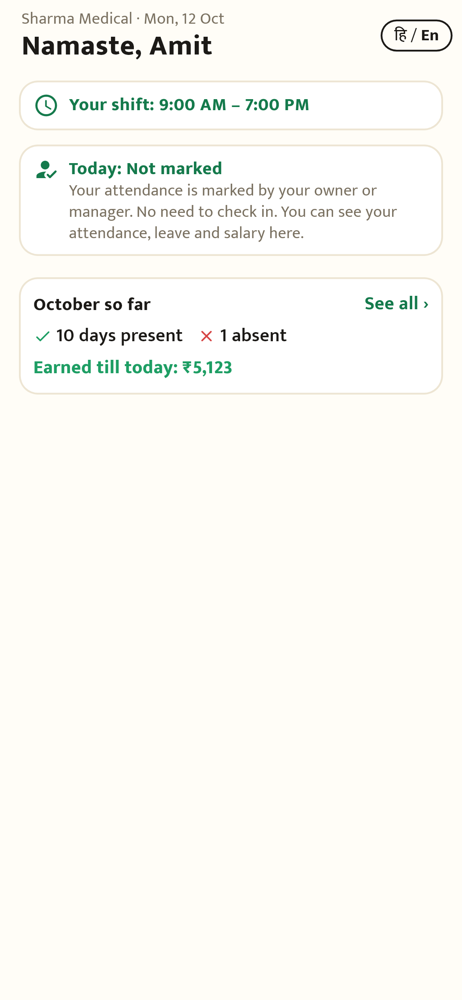
4Staff opens the app
No check-in button, no location or selfie. "Your attendance is marked by your owner or manager." Month, leave and salary are all still there.
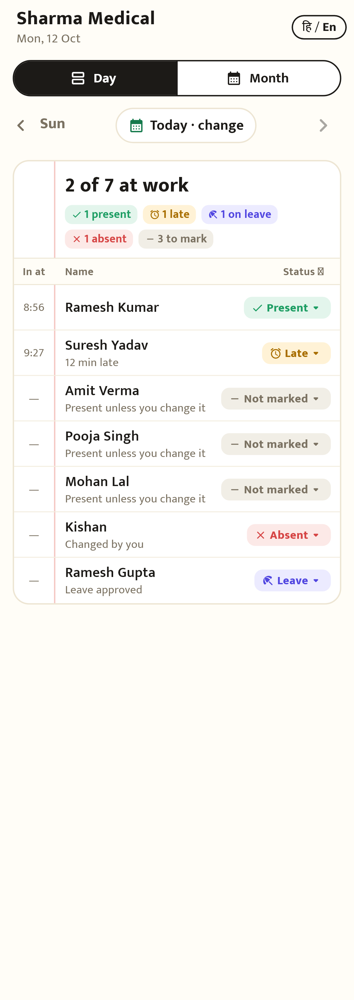
5Owner sees who to mark
"3 to mark". Each row says Not marked · Present unless you change it. Staff who check in work as before.
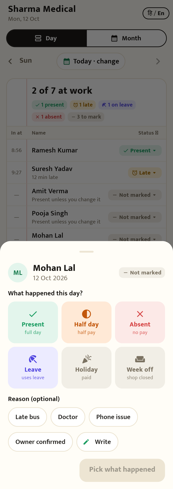
6Mark only the exceptions
Tap a row → Absent, Half day or Leave (with an optional reason). Kishan was marked Absent this way.
C. At 11:59 PM Automatic
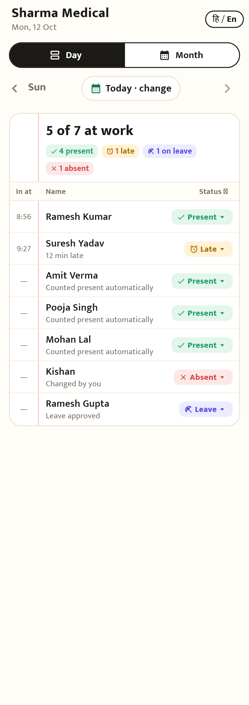
7Everyone not marked → Present
Amit, Pooja and Mohan: Counted present automatically. Kishan stays Absent and Ramesh Gupta stays on Leave. The owner can still change any day before salary is final.
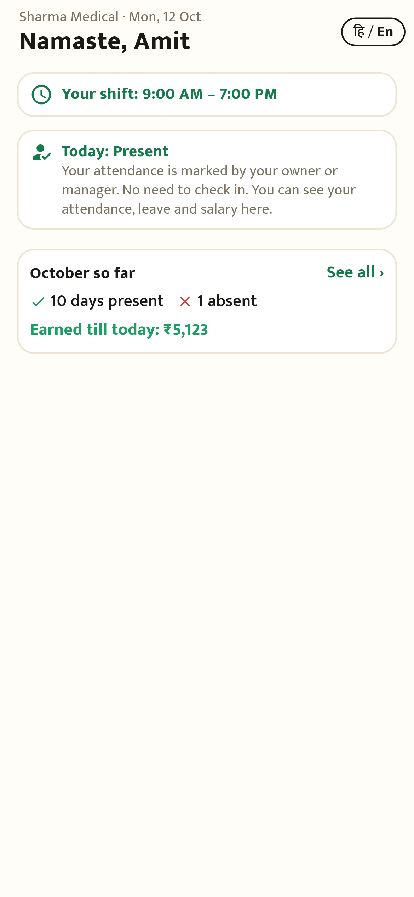
8Staff sees the result
"Today: Present". Their month and "Earned till today" count it.
Present by default OFF (the starting setting): unmarked → Absent, same as today. Rows say "You mark · tap to mark".
Never changed: leave, holiday, week off, days already marked, and staff who check in themselves.
Before vs after
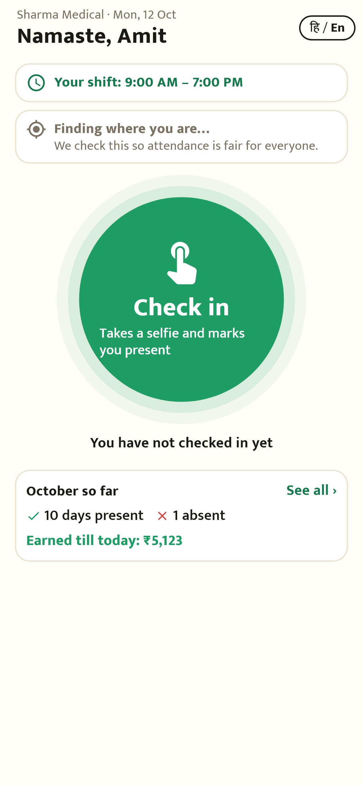
✕Before: staff app
Everyone had to check in with a selfie and location.
✓After: staff app
For owner-marked staff: view only.
✕Before: owner's Today
"Not in yet" for staff without the app. All became Absent at night.
✓After: owner's Today
"Not marked · Present unless you change it", and "3 to mark".
हिन्दी
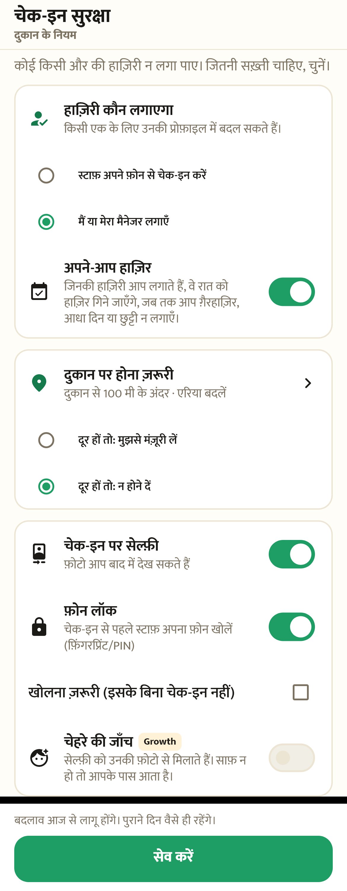
सेटिंग
हाज़िरी कौन लगाएगा · अपने-आप हाज़िर
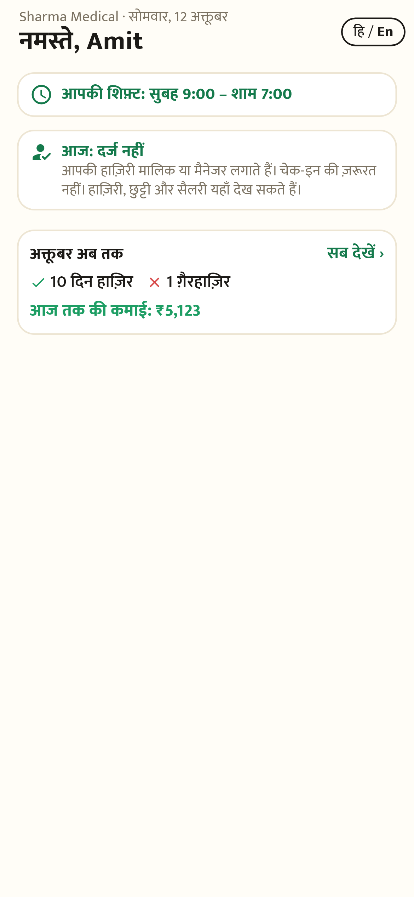
स्टाफ़ ऐप (दिन में)
आज: दर्ज नहीं
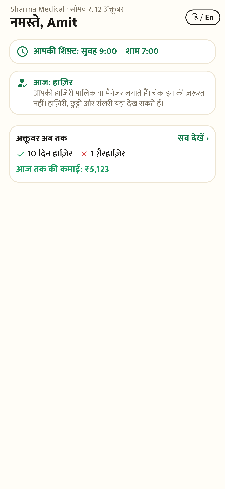
स्टाफ़ ऐप (रात के बाद)
आज: हाज़िर